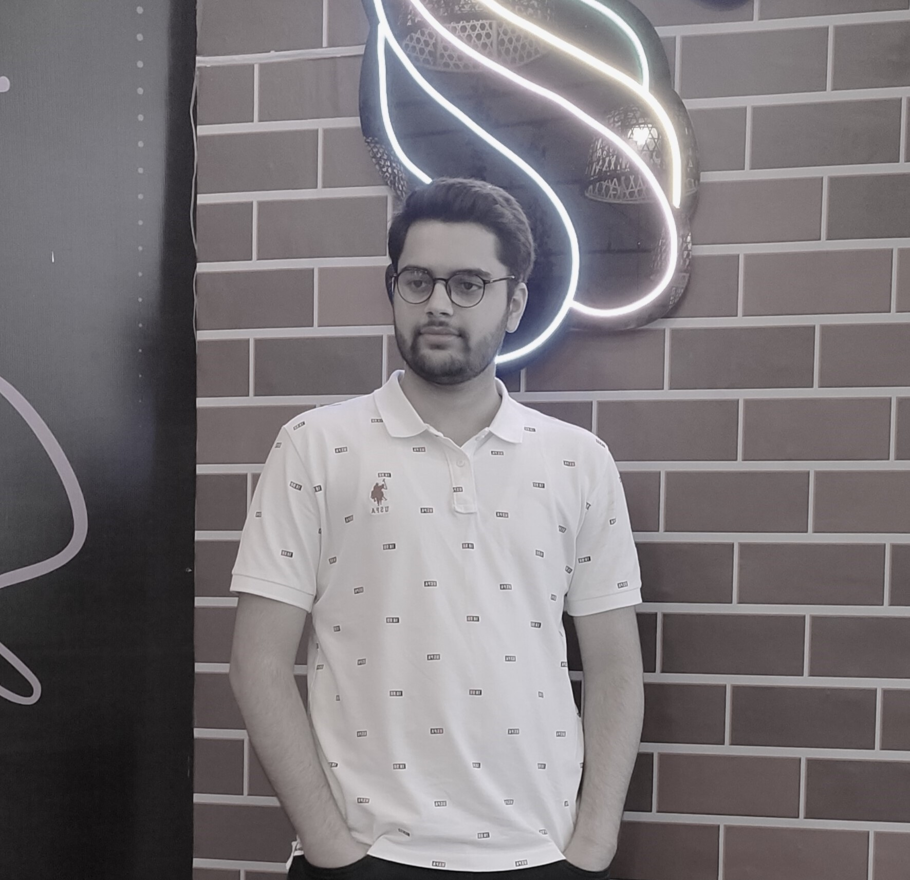
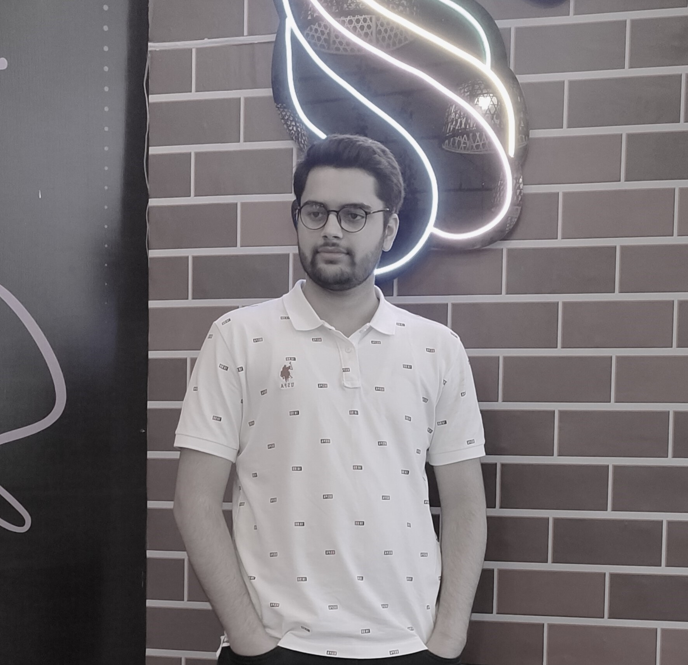
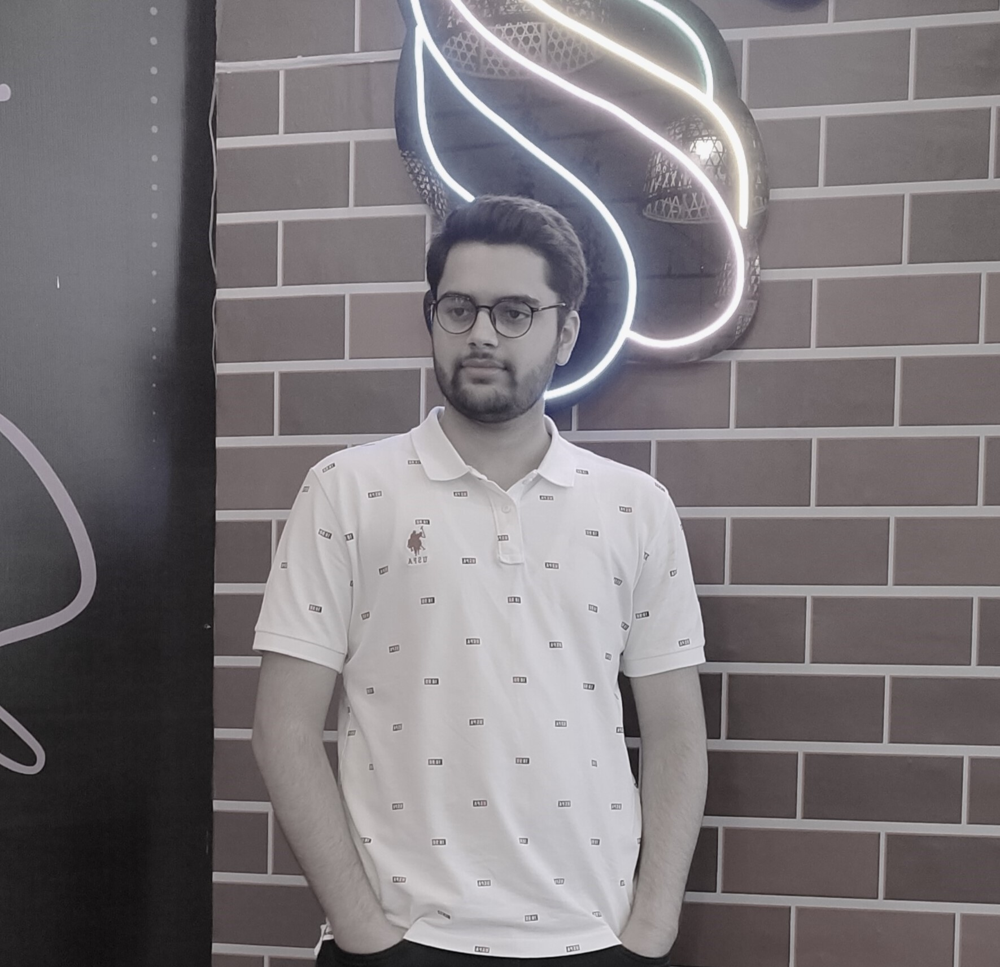

.png) ....
....Vedant Tiwari
....Hi, I'm Vedant Tiwari! A dedicated and enthusiastic Computer Science student with a deep love for coding and problem-solving. My journey began with a strong foundation in mathematics and computer science, reflected in my top scores of 97% and 96% in these subjects during my CBSE board exams, was even awarded a scholarship for being the topper of the school.
My passion for coding led me to create a range of impactful projects. From a quiz engine that addressed the challenges of online schooling during COVID-19, to a comprehensive home automation system that streamlined tasks, my projects span a spectrum of innovation and "practicality".
Game development is another facet of my creativity. I developed a 3D rocket game using C# and Unity during my 10th standard, and an physics based Android block racing game using the same technologies.
Currently pursuing a dual degree (B.Tech + M.Tech) in Computer Science with a specialization in Data Science and Business Systems at SRMIST KTR. As part of my continuous learning, I'm also mastering Full Stack Web Development and working towards an Oracle Developer certification.
With a focus on growth, I'm aspiring to contribute to the tech world through Google Summer of Code (GSoC), combining my coding skills and innovation to impact open-source projects positively.
Connect with me to discuss coding, tech trends, and collaborative opportunities. Let's shape the future through code together! #CodingPassion #GSoCAspirant
read less